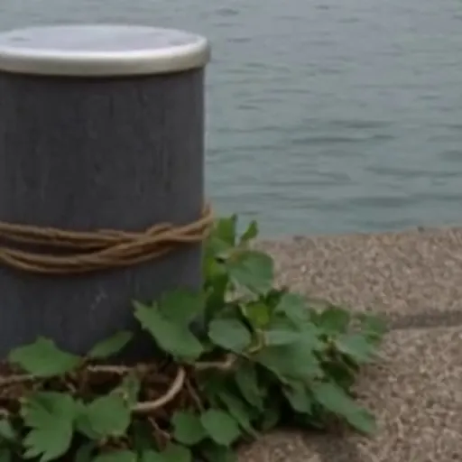
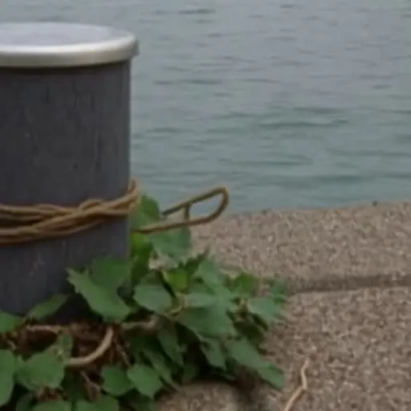
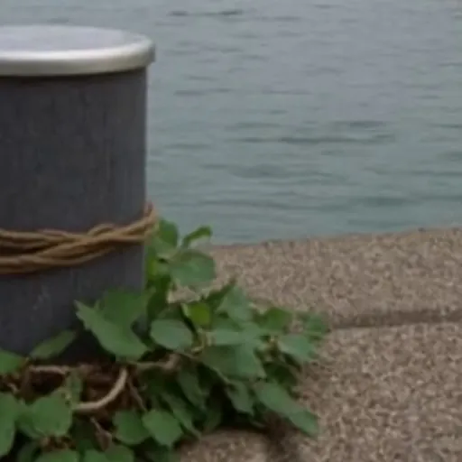

Key observation
Depth settles long before appearance.
At every step, the model also predicts the clean video. The depth of that prediction stabilizes after a small fraction of the steps.
Median correlation 0.88 after 10% of the steps
Clean prediction D(L̂)
Its depth (bright = near)
Correlation with the final depth (median over 50 videos)
Method
Branch the right view from the left view's trajectory.
The left view is sampled as an ordinary video. After step r0, its noisy latent is warped by depth to start the right view, and after r1, …, rm the right view is refreshed. Both views are sampled side by side by the same frozen model.
The left view starts from noise.
At this step
Left view D(L̂)
Right view D(R̂)
Anaglyph (red = left, cyan = right)
Depth-guided warp
Inverse depth z
Cell shifts w(p)
S[L̂] and holes H
- warp step
- left view L
- right view R
- far to near
- hole H
- padding, P = 1
Depth-guided warp
Each latent cell moves by its disparity.
The farthest surface gets zero disparity and the nearest gets dmax. A cell moves round(δ/s) whole cells to the left, the nearest surface wins collisions, and cells nothing lands on are the holes.
Cells of 8 px on Wan 2.1, 32 px on LTX-2.3
Donor chain
Refresh the shared surfaces. Keep the right view's own holes.
At each refresh, depth is re-estimated and the warped left latent is copied again onto every covered cell. In the holes, the right view's own clean prediction R̂ is re-noised to the current level, so the right view donates what it has generated there.
Refreshes after steps 10, 15 and 20 of 50
Refresh: shared cells copy the left again; holes keep R̂.
S[L̂]
R̂
written
Window in the frame
Cell by cell
- warp step
- left view L
- right view R
- hole H
- padding, P = 1
- dimmed: not used by this write
- cell under the cursor
- noise level t
Read the donor chain as text
The text version needs the page's data file.
Why a chain
Without refreshes, the views drift apart.
Branching at step 5 and never refreshing raises MEt3R from 8.295 to 14.896 over 50 Wan 2.1 prompts (lower is better). A single warp at step 20 scores lower still, 7.995, but the background it exposes starts from a guess late in sampling.
MEt3R × 100 · no refresh 14.896 · default 8.295 · single warp at 20 7.995
Left view
Right view 5→10→15→20
MEt3R × 100 by last refresh, branch at 5 (lower is better)
Refreshing past step 20 lowers MEt3R further, but iSQoE rises from 0.6674 to 0.6741 to 0.6790 and AQ falls from 0.553 to 0.543 to 0.539.
Boundary padding
Padding repaints foreground slivers.
A cell centred on the background can still hold part of a foreground edge, which then moves with the background. Growing H by P cells to the right lets the donor repaint that sliver.
Left view

Right view drag the divider


P = 0P = 1Video-to-stereo
Invert, then branch.
An existing video becomes the left view. Inversion runs the sampler backward from its clean latent to the branching step r0 and keeps the states at r1, …, rm. Depth is estimated once from the input, so the holes stay fixed.
Two (Wan 2.1) or three (LTX-2.3) fixed-point iterations per inverted step
The input video is the left view.
Parallel sampling
Both views are sampled at the same time.
Each refresh needs only the current state of the left view, so the right view runs alongside it, in one batch or on two GPUs.
2.4× fewer FLOPs than DissolveStereo†
Results
Text-to-stereo
Stereo videos generated from a prompt by unchanged Wan 2.1 and LTX-2.3 models.
Results
Video-to-stereo
Existing videos converted to stereo. Each input is kept as the left view.
Comparisons
Against prior methods
Every method starts from the same left video. All but StereoWorld, which has no disparity control, run at the same disparity setting. DissolveStereo† is DissolveStereo adapted to the same backbone.
BibTeX